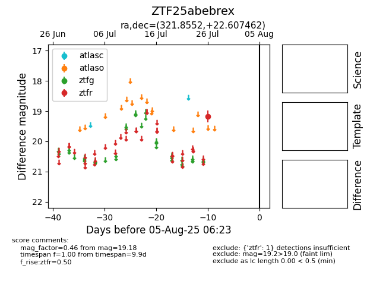

Target ZTF25abebrex at 2025-08-05 07:33, see:
FINK: fink-portal.org/ZTF25abebrex
Lasair: lasair-ztf.lsst.ac.uk/objects/ZTF25abebrex
ALeRCE: alerce.online/object/ZTF25abebrex
alt names
ZTF25abebrex (ztf,fink)
coordinates:
equatorial (ra, dec) = (321.8552,+22.60746)
galactic (l, b) = (73.1645,-19.98145)
photometry
last ztfr=19.18
1 ztfr detections
